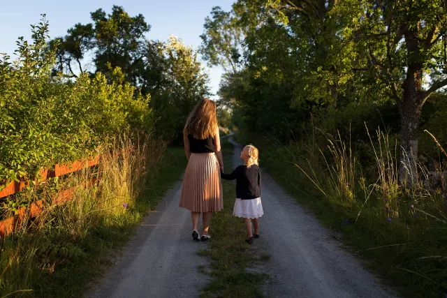
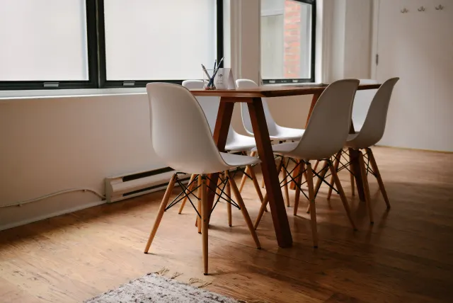
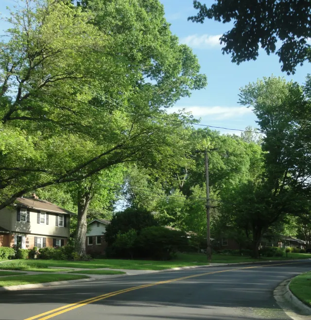
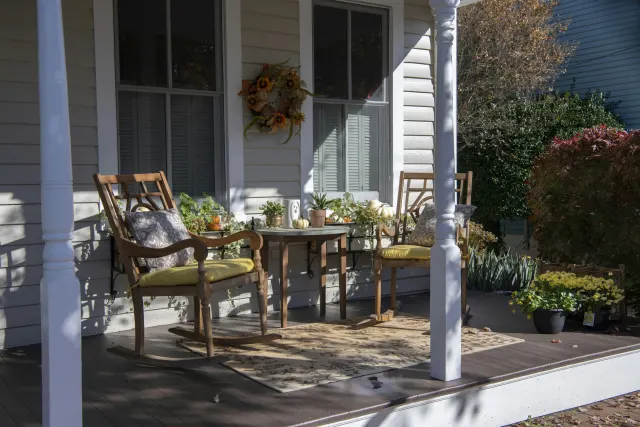
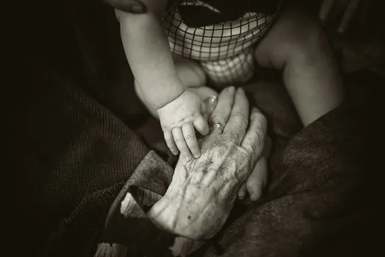
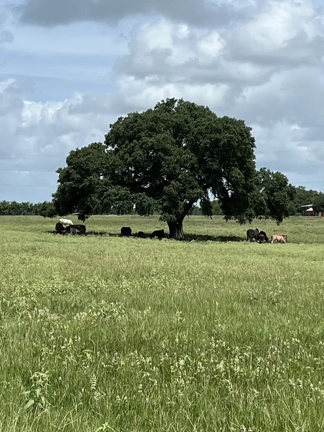
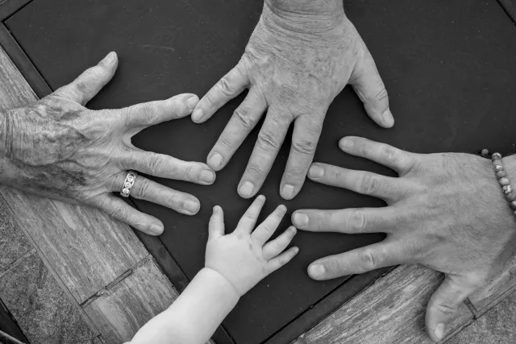

Photo credits
Every photo in this design preview is royalty-free stock. None shows the firm, its people, its office or its clients. Hollis & Avery Law is a fictional firm.
Used in Option A
-
Still water reflecting a soft dusk sky over a rocky shoreline
“Calm cold sunset” by Shiva Shenoy · Wikimedia Commons · CC BY 2.0 · resized and cropped
-

Daylight from tall windows across an empty conference table
Photo by Breather · Wikimedia Commons · CC0 1.0
-

Hands signing a page of a printed document
Photo by Helloquence · Wikimedia Commons · CC0 1.0
-

An adult and a small child walking hand in hand down a sunlit gravel lane
Photo by Jon Flobrant · Wikimedia Commons · CC0 1.0
-

Reading glasses resting on a printed page
Photo by James Sutton · Wikimedia Commons · CC0 1.0
.jpg){kind=link}
.jpg){kind=link}
.jpg){kind=link}
.jpg){kind=link}
.jpg){kind=link}
Used in Option B
-

A small wooden table and four chairs beside a sunny window
Photo by Breather · Wikimedia Commons · CC0 1.0
-

An open notebook and pencil beside a cup of black coffee
Photo by Hope House Press · Wikimedia Commons · CC0 1.0
-

A quiet residential street curving beneath tall green trees
Photo by Kenneth Running · Unsplash · Unsplash License (cropped)
-

Two rocking chairs and a small table on a sunny front porch
Photo by Robin Jonathan Deutsch · Unsplash · Unsplash License
-

An older hand gently holding a baby's small hand
Photo by Rod Long · Unsplash · Unsplash License
-

A broad oak tree shading cattle in a tall-grass pasture
“Texas live oak and cattle” by Michaelluckey · Wikimedia Commons · CC BY 4.0 · resized and cropped
.jpg){kind=link}
.jpg){kind=link}

Used in Option C
-
Soft window light falling on an empty table and chairs
Photo by Matt Hoffman · Wikimedia Commons · CC0 1.0
-

A quiet meeting room with a wooden table and black chairs
Photo by Crew · Wikimedia Commons · CC0 1.0
-

Four hands of different ages laid together on a table
Photo by Barnabas Piper · Unsplash · Unsplash License
-
Orange and violet sunset clouds reflected in a calm lake
“Grapevine Lake, Texas - the last sunset of 2021” by Shiva Shenoy · Wikimedia Commons · CC BY 2.0 · resized, cropped and shown in black and white
.jpg){kind=link}
.jpg){kind=link}